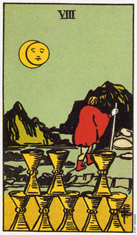

圣杯八意味你已经突破某种状况，并显示你要追寻更多的东西。
在圣杯八当中有八个正放的杯子，而且留了一个空间给第九个杯子。牌上有一个人正走离这些杯子，朝向更高处而去。这八个杯子代表快乐的机会，而且还可以容纳过去快乐的事物。
你知道的，不论如何，远离你所拥有的以追寻更多事物的时候已经到了，这点我们可由牌上留给另一个杯子的空间看出来。圣杯七中的内在追寻使人理解到必定还有更多的东西，八则显示肉体上的追寻已经开始。这是水的元素真正的意义。在某种处境枯竭或倒塌之前，它使你有能力去感知此状况即将结束。
那个人朝高处走去暗示着进步，而且可能会产生一个更好的视野。这张牌和隐士牌类似――要达到更高的地方，或者获得更好的视野，必须先将日常生活中的寻常事物置于身后。
月亮正移过太阳，这暗示两件事情：内在的认知比外在的行动还来得重要，而且这追寻将是日以继夜的(包括在梦中和清醒时)。而“醒着”的状态可包含阅读书籍、治疗、上课或聊天。
大体上的意义
圣杯八意味着你正超越某人，或突破某特定状况。它表示一个人光理解还不够，还包括离开一种稳定的状态(圣杯六)，去发现圣杯十所提供的满足感。
没有任何人事物强迫你放弃目前的状态，除了你内心想达到更强烈满足的需求。要圆满的挑战成功，需要内在的力量，当八出现时，你就会拥有相对的勇气和力量。在大阿尔克纳牌中，第八张是力量牌。而所有塔罗牌的八也都和力量有关。
两性关系上的意义
在两性关系分析当中，圣杯八表述的时离开某段关系的行动，或对于你目前关系追寻更深刻承诺的行动。这可经由身体的出走、找时间沉思，或浸淫于书籍中来完成。你需要更进一步理解到，目前的状况是不够的。
倒立的圣杯八
当圣杯八倒立时，暗示你拒绝离开某种状态。你不想离开，即使你早就知道它已经无法在提供任何新事物予你了。你需要确认一点，只要你去追寻，生命将会提供你更美好的状态。
另一种意义是，要离开的时候还没有到来，而你却急切地想离开，而不愿意面对这个状态，并以勇气去追求它。圣杯八倒立可意味着缺乏信心或内在的力量，致使你放弃一个其实是值得投入的状态。它也可以形容当困难来临时，或是在需要真诚承诺的时候，你就想逃离。所以当这张牌倒立时，你得要仔细聆听你内心的声音，而不是你非理性的恐惧。
这张牌倒立时，通常代表情感的力量寥寥无几。你要不是对某种能满足你需要的情况缺乏承诺的勇气，不然就是害怕离开那个根本无法满足你的情况。它可表示你的思维、心灵，以及过去的情感模式都显得很混乱。
现在是沉静下来的时候，在你行动之前应该回到正立的起，深思你的内在需求。重要的是，当你出发时你要能确定你会有所行动，而不是重蹈覆辙。